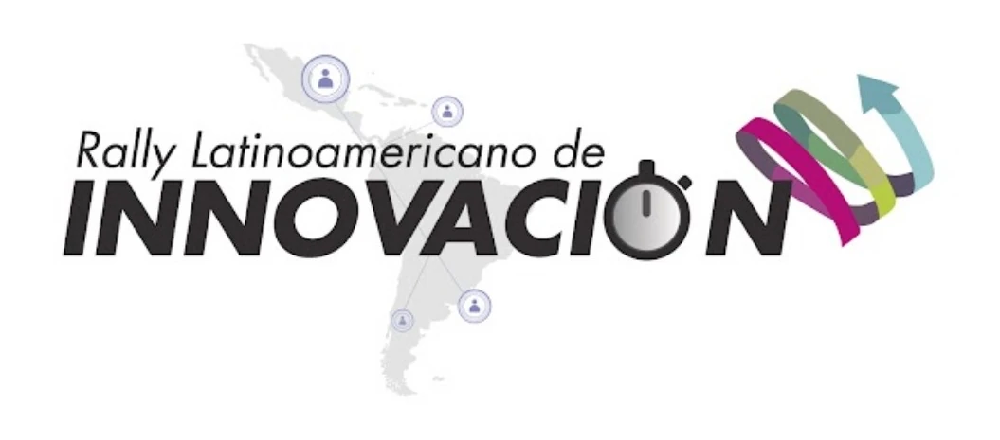
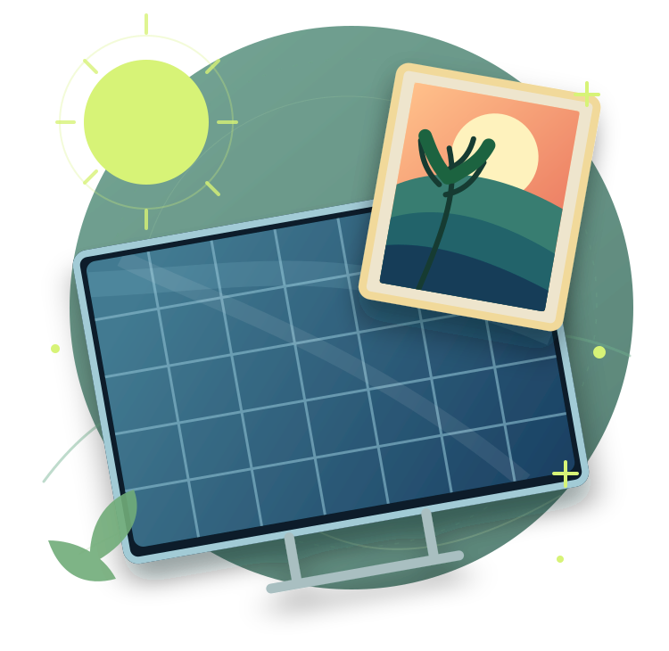
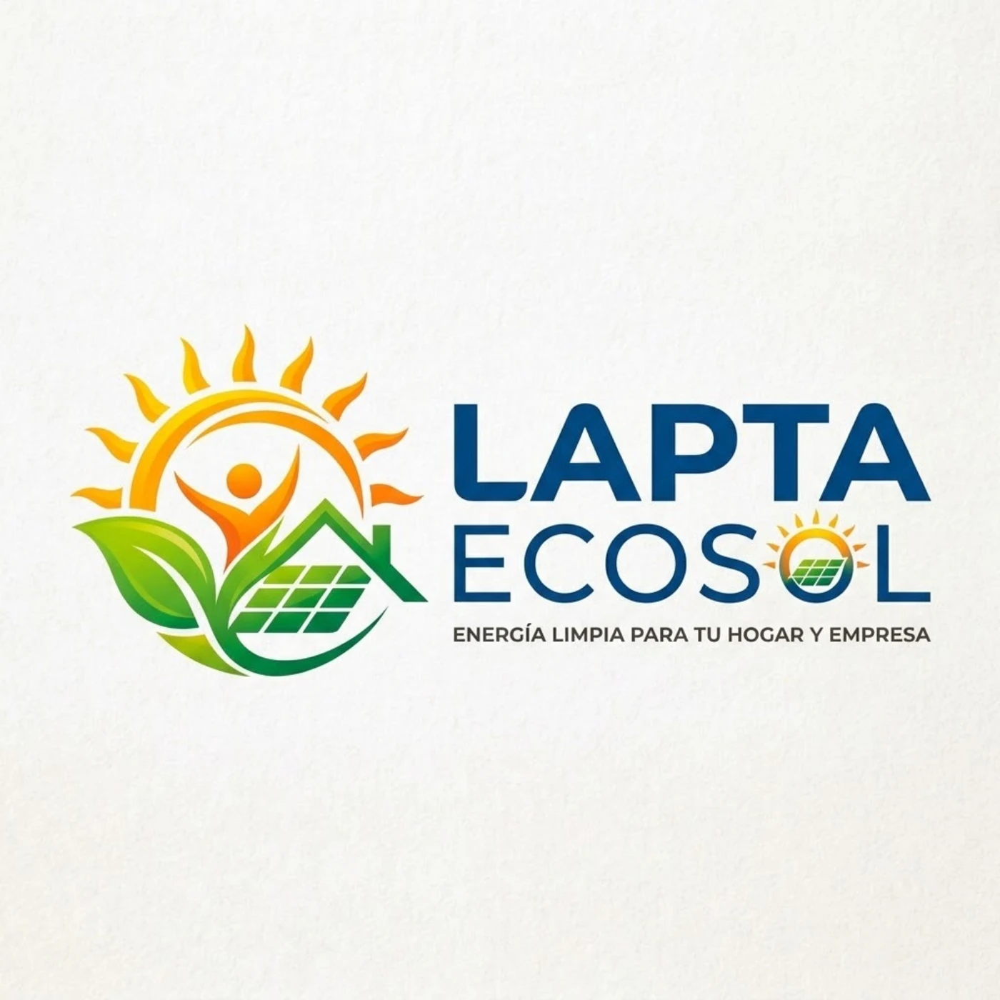
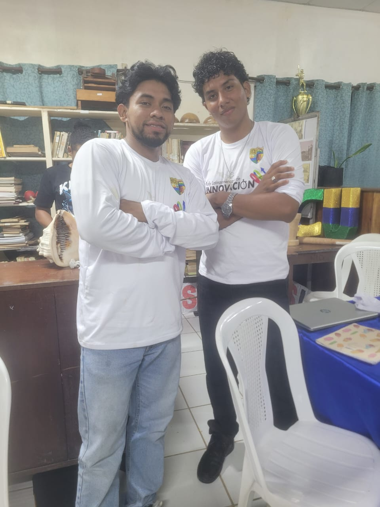
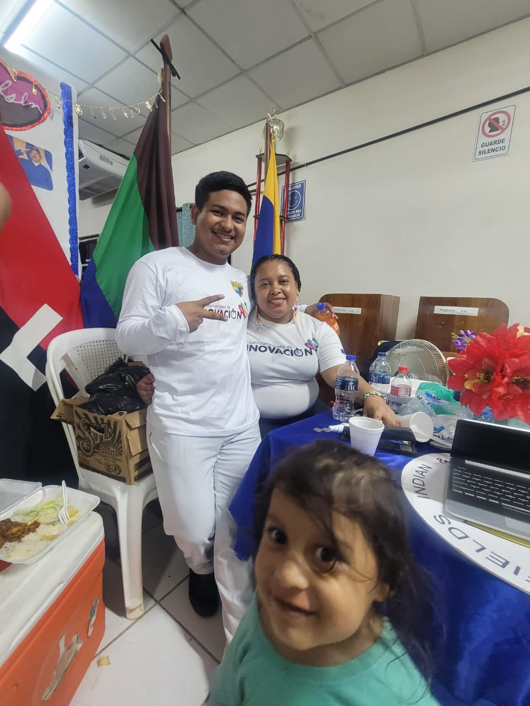
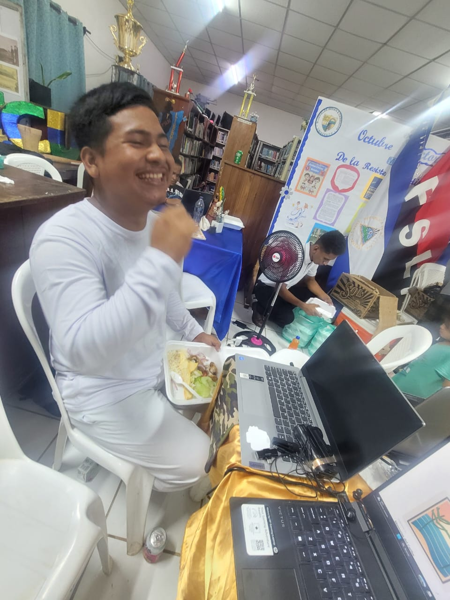

DESDE NICARAGUA PARA AMÉRICA LATINA
La energía no termina aquí. Se transforma.
Damos una segunda oportunidad a los paneles solares en desuso: energía para comunidades, arte con identidad y reciclaje responsable.
Economía circular
Innovación social
Energía limpia

↗Ruta AEnergía comunitaria
✦Ruta BArte con propósito
UN PANELUNA NUEVA HISTORIA
NUESTRA IDENTIDAD
Tres logos, una misma visión.
Conoce la competencia, nuestro equipo y la iniciativa que queremos llevar a toda América Latina.
LA COMPETENCIA
Buena Vibra Innovación con energía positiva

Lapta Ecosol Energía limpia para tu hogar y empresa
01 / EL RETO
¿Y después de la última carga?
Un panel solar puede dejar de usarse antes de que todos sus materiales pierdan valor. El reto está en decidir qué puede recuperarse sin poner en riesgo a las personas ni al ambiente.
Proponemos recolectar, evaluar y clasificar paneles retirados. Los aptos tendrán una segunda vida energética; otros, cuando sean seguros para ello, podrán convertirse en arte; y los restantes serán dirigidos a reciclaje especializado.
Proyecto en fase de propuesta y diseño piloto
Más energía aprovechadaUsos eléctricos de menor demanda
Más valor para el arteCreación y comercio justo
Menos residuos mal gestionadosReciclaje con especialistas
02 / NUESTRA SOLUCIÓN
Tres caminos. Un mismo propósito.
Primero se inspecciona el panel con personal capacitado. Su estado y seguridad determinan cuál de estas rutas puede seguir.
RUTA A
Volver a iluminar
Paneles que superen pruebas técnicas podrán alimentar equipos de bajo consumo, como luces LED, en espacios comunitarios.
REUTILIZACIÓN ENERGÉTICA
RUTA B
Convertirse en arte
Solo paneles o componentes declarados seguros para uso decorativo se transformarán en cuadros con identidad cultural.
TRANSFORMACIÓN ARTÍSTICA
RUTA C
Recuperar materiales
Los paneles no aptos para usos anteriores serán entregados a gestores especializados, sin desarmarlos artesanalmente.
RECICLAJE RESPONSABLE
No todos los módulos dañados sirven como soporte artístico. La evaluación de seguridad es obligatoria antes de manipularlos, cortarlos o pintarlos.
03 / CÓMO FUNCIONARÍA
Del desuso a una nueva oportunidad.
Un proceso sencillo de entender, pero con controles claros para poner la seguridad primero.
Prueba la clasificación- 01
Alianzas y recolección
Recibir paneles mediante acuerdos con empresas, instituciones y comunidades.
- 02
Diagnóstico técnico
Revisar estado físico, rendimiento eléctrico y seguridad con especialistas.
- 03
Clasificación
Asignar una ruta: energía, arte seguro o reciclaje especializado.
- 04
Segunda vida
Impulsar soluciones energéticas comunitarias o piezas artísticas comercializables.
- 05
Seguimiento
Registrar el destino de cada panel para conocer resultados y mejorar el modelo.
04 / DEMOSTRACIÓN INTERACTIVA
¿Qué ruta seguiría un panel?
Prueba nuestro ejemplo de clasificación para entender las decisiones del proyecto. No realiza una evaluación física ni certifica que un panel sea seguro.
SIMULADOR EDUCATIVO · SIN DATOS REALES05 / Galeria de fotos
Una nueva superficie. Mil historias.
El tiempo es corto , disfrutemos del momento



* Las obras mostradas son ilustraciones conceptuales, no productos fabricados ni disponibles para venta.
06 / NUESTRO RECORRIDO
Momentos que inspiran.
Un espacio para reunir videos de nuestras reuniones, presentaciones, talleres, avances y recuerdos del Equipo Buena Vibra.
Pronto compartiremos nuestros momentos.
Aquí aparecerán los videos reales de las actividades del equipo. Puedes agregar el primero usando el formulario de abajo.
Agregar primer video+ Añadir y organizar videos Abre las herramientas
Importante: los archivos o enlaces agregados aquí se guardan solo en este navegador. Para que todos los visitantes vean los videos, colócalos en
assets/videos/ y regístralos en videos-publicos.js, o publica un enlace de YouTube en ese archivo.Los videos que agregues en este dispositivo se pueden quitar desde su tarjeta. No se envían automáticamente a un servidor.
07 / IMPACTO ESPERADO
Una idea con impacto más allá del panel.
Queremos que el beneficio ambiental vaya de la mano con el acceso a energía y las oportunidades de emprendimiento.
Ambiental
Extender la vida útil de equipos aptos y derivar los demás a una gestión responsable.
Social
Apoyar espacios comunitarios que necesitan soluciones de iluminación y pequeños consumos.
Económico
Crear posibilidades de ingresos para artistas mediante piezas decorativas con precio justo.
CUANDO INICIE EL PILOTO, ESTOS SERÁN LOS INDICADORES QUE MEDIREMOS:
01Paneles evaluados
02Potencia recuperada (W)
03Obras artísticas elaboradas
04Material derivado a reciclaje
08 / VISIÓN REGIONAL
Nace en Nicaragua.
Piensa en grande.
La primera meta es desarrollar una prueba piloto de pequeña escala, con alianzas formales y controles de seguridad. Después, el método de clasificación, registro y aprovechamiento podría adaptarse a otros contextos de América Latina.
NicaraguaPiloto comunitarioModelo replicable
09 / PREGUNTAS FRECUENTES
Respuestas claras, decisiones responsables.
¿Cualquier panel solar puede reutilizarse?
No. Solo aquellos que superen una evaluación técnica de rendimiento, estado físico y seguridad podrán destinarse a otra aplicación energética.
¿Se puede pintar directamente un panel roto?
No se deben romper, cortar ni desarmar paneles por cuenta propia. Para elaborar arte se requieren unidades o componentes aptos y previamente declarados seguros por especialistas.
¿El equipo tendrá una planta de reciclaje?
No está prevista al inicio. El piloto se enfocará en recolectar, clasificar y coordinar la entrega de materiales no aptos a gestores especializados, según las normas aplicables.
¿Ya se instaló algún sistema comunitario?
Todavía no. Esta web presenta una propuesta de innovación. El siguiente paso es conseguir aliados, evaluar un lote pequeño de paneles y diseñar una prueba demostrativa.
EQUIPO BUENA VIBRA · RALLY LATINOAMERICANO
Lo que parecía el final puede ser un nuevo comienzo.
Energía para las comunidades. Arte para contar historias. Un futuro con menos desperdicio.